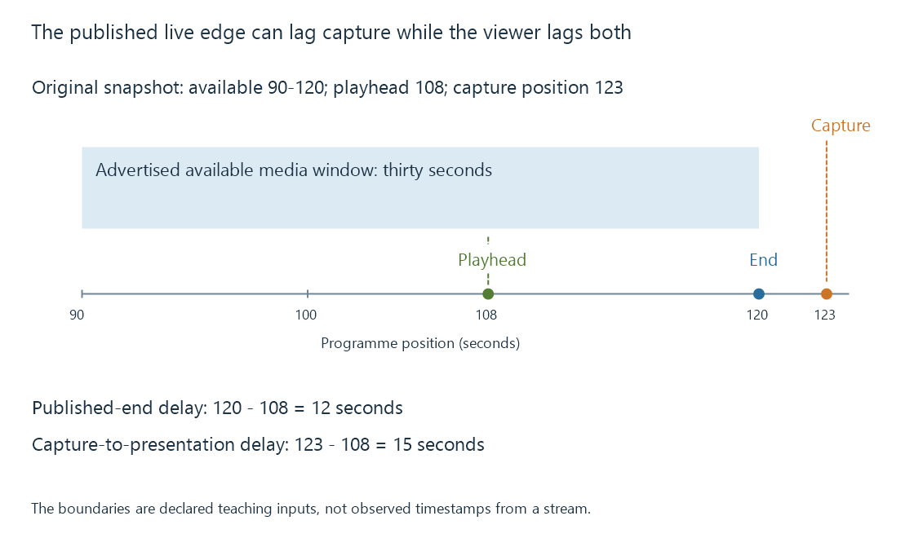

Live streams and on-demand streams
Live and on-demand streams differ in when programme media exists and remains available, shaping timeline discovery, seeking, pausing and the meaning of the live position.
An on-demand stream starts from programme media that already exists. A live stream publishes media as a programme unfolds. The delivery can use the same protocol in both cases, while availability and timeline behavior differ.
This distinction explains why live seeking can have a moving boundary and why “go live” is more than jumping to the last byte in a file.
Compare what is available
| Question | Completed on-demand presentation | Live presentation with a rolling window |
|---|---|---|
| Does later programme media already exist? | Normally yes | Future programme media does not yet exist |
| Does the description need new intervals? | A completed description can remain stable | New availability must be communicated |
| Can the earliest available position move? | Normally fixed for the resource | Older intervals can leave the window |
| What does pausing do? | Holds a position in existing media | Publication can advance while the position stays still |
Live delivery can retain a large seekable window or very little. A recording can retain media beyond the streaming window. These are separate resource and product decisions.
The live edge has a publication context
Use an original snapshot whose available programme interval is 90–120 seconds. A viewer is presenting programme second 108:
Delay behind the advertised end = 120 - 108 = 12 seconds
If the capture clock has already reached programme second 123, three seconds of programme time have not yet reached this availability boundary. Capture-to-presentation delay is then:
123 - 108 = 15 seconds
The two results measure different endpoints. “Twelve seconds behind live” is ambiguous until the reference is identified.

A player usually selects a suitable position behind the newest available media so it has enough reserve and dependencies for reliable presentation. The last advertised sample is not automatically the best immediate starting position.
A paused playhead can fall out of the window
Assume the example's rolling window continues to retain thirty seconds while publication advances at one programme second per wall second.
After ten paused seconds, it covers 100–130. Position 108 remains available, but it is now twenty-two seconds behind the end.
After thirty paused seconds, it covers 120–150. Position 108 is outside that advertised window. Resuming from the old position requires some other retained resource or a policy that chooses another available position.
The original pause did not delete the programme. It allowed the publishing system's availability boundary to advance beyond what this delivery path still exposes.
Seeking needs availability as well as an access point
An on-demand seek uses a destination inside the resource's duration and resolves the relevant data and decoding dependencies. A live seek first needs to establish whether that destination is still available.
The player then needs the appropriate playlist or manifest information, initialization and suitable encoded access point. A visible time slider can describe seekable availability rather than fully downloaded media; buffered and seekable ranges are different observations.
In an Emby live-TV session, the delivery window, the server's temporary session output and any retained recording therefore have different meanings. A temporary conversion resource is not inherently a permanent recording of everything that has passed.
Ending publication changes the task
Once a programme ends, a publisher can mark that no more intervals will appear. It may also publish a stable complete resource for later viewing.
A final rolling snapshot containing only the last thirty seconds does not suddenly become the complete earlier programme. To create an on-demand asset covering the whole event, the publisher must retain and describe that complete media range.
See Also
- Low-latency streaming and the live presentation delay
- HLS playlists: variants, media order and live windows
- MPEG-DASH and its media presentation description
- Seeking during streaming
- Transcode temporary files and generated output